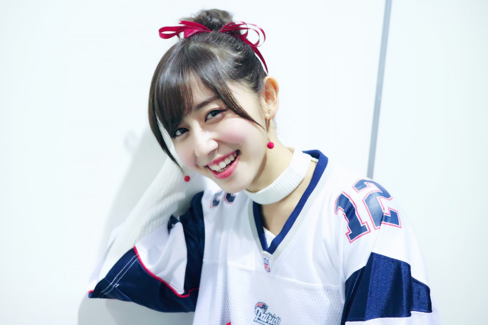
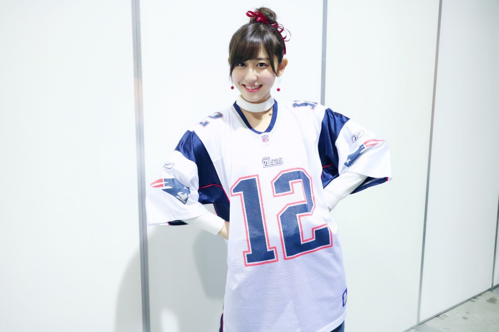
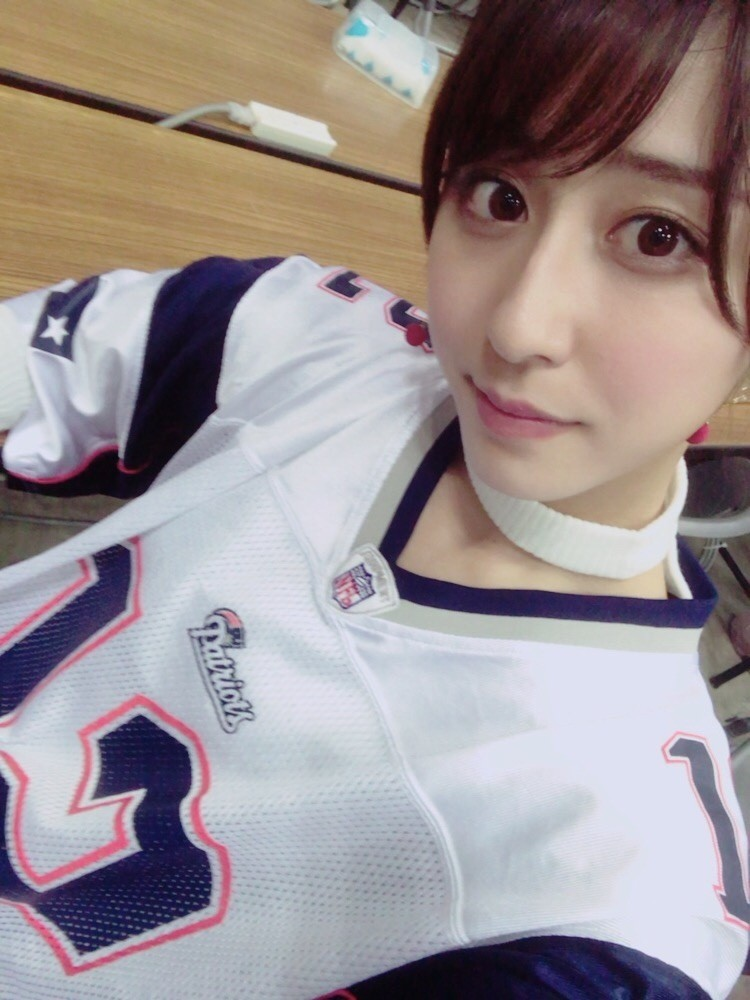

| 2017/02 07 Tue | 斎藤ちはる 第51回スーパーボウル。 |
ちはるーむへようこそ
やっと、スーパーボウルを観ました！
何から言ったらいいんだろう...！
っていうくらいに興奮が収まりません笑
アメフトの面白さや醍醐味を
全て詰め込んだような、
今後も忘れる事はないだろう、
素晴らしい試合でした。
こんなに素晴らしい試合を見せてくれた
プレイヤーやコーチの皆さんに
直接感謝を伝えにまわりたいくらい！
本当に凄かったです...
いつか現地で、生のスーパーボウルが
見てみたい！という私の密かな夢が
私の大きな目標へと変わりました。
スーパーボウルに関わるお仕事もしたいし
現地でリポートもしてみたい。
いつか携われますように...

ペイトリオッツ対ファルコンズ。
正直、第3クォーターまで
ペイトリオッツの逆転は出来ないだろう、
ファルコンズが勝利するんだろうな、
あんなにペイトリオッツが勝つのではないかと
ブログで豪語してしまったのに
何て書いたらいいのだろう、
などと色んな事を考えてしまっていました。
でも第4クォーターで
そんな事を考えていた私が愚かだったなと思いました。
驚きと奇跡と努力が詰まった第4クォーター。
ペイトリオッツを応援している私からしたら
本当皆さんに見ていただきたいくらい！
難しいボールでもちゃんとパスが取れるレシーバー陣と
レギュラーシーズンMVPのQBライアンによる
ファルコンズのオフェンスは
とてもテンポが良く、
いとも簡単にタッチダウンを取ってるようにも見えました。
前半は完全にファルコンズ優勢で
誰もがファルコンズの優勝だと思ったと思います。
私もその1人でした。
また、ディフェンスがそんなに強くないと
言われていたファルコンズディフェンスも
びっくりするくらいに強く、
ブレイディがサックされ、インターセプトされる珍しい姿を沢山見ました。
ファルコンズディフェンスが弱いって
言われてたなんて信じられない、というくらいに。
注目していたフリオ・ジョーンズ。
良いところでしっかりパスを取れる
安定したパスキャッチは
スーパーボウルでもやはり健在。
相手にいたら嫌だな〜と思い、
味方にいたら力強い存在だと思いました。
そしてQBにとって1番怖い
QBサックを沢山仕掛けてくる選手、
グレイディ・ジャレットの存在感たるや！
あの巨体であの速さでこられたら
太刀打ち出来ない...！
凄かったです。
思ったのは、ファルコンズの
ルーキーがとても良い動きをするというところ！
体力もあり、動きもより早く、
目立つ活躍をしていました。
ルーキーが今後もっと経験を積んだら
ファルコンズはどれほどまでの力を
つけるんだろうと楽しみです。
「諦めない心」で勝利を掴みとったペイトリオッツ。
NFLナンバーワンのディフェンスは
NFLナンバーワンのファルコンズのオフェンスに苦戦していました。
あのブレイディでさえ、下を向き、
いつもの強い瞳から光が消えかけているのも
分かるくらいにペイトリオッツが押されていました。
今までのスーパーボウルの歴史で
10点以上点差をつけられてからの
逆転劇は無かったようです。
しかしペイトリオッツは25点差をつけられました。
いくら強いペイトリオッツだとしても
逆転するにはタッチダウンプラス、
ツーポイントコンバージョンで。
しかもそれを２つ連続で取らなきゃいけない、
さらにそこからオーバータイムで
タッチダウンをしなければいけないなんて、
そんな奇跡みたいな話は難しすぎる！！
と思っていましたが、
そんな奇跡みたいな話が本当に起こるなんて。
3rdダウン1ヤードでのライアンのパスプレーのサック。
エデルマンの、今後歴史に残るであろう
スペシャルキャッチ。
ブレイディの完璧すぎるドライブ。
絶対に諦めないで頑張ろう、と
ハーフタイムにチームで話し合っていた絆。
スーパーボウルの為に努力してきた時間。
全ての要素が勝利に繋がったのだと思います。
エデルマンはスーパーキャッチ含めやはり
素晴らしかったですが、
同じオフェンスのRBのホワイトの活躍には
目を見張るものがありました。
なんと史上初の14レセプション、
最長の110レシーブヤード、
タイ記録の3タッチダウン。
1試合でこれだけの記録を樹立できるのは
努力の結果であり、勝負強さだと思います。
並べて書いてみても凄い迫力！
そしてこの試合を語るに欠かせない
MVP、QBトム・ブレイディ。
やはりブレイディは真の強さを持っていました。
62回のパスアテンプト、
43回のパスコンプリート、
466ヤードのパスヤード、
全てにおいて新記録...！
更にスーパーボウルでの優勝を
5回も経験したQBは史上初。
歴史上最も素晴らしいQBとも評されています。
確かにこんなに新記録をマークするなんて
本当にそうかもしれないとも思います。
点差や時間に追われながらも
必ず冷静に試合に挑む姿は
流石ブレイディ！という感じでした。
益々応援したくなりました！

歴史にも、記憶にも残る素晴らしい試合は
「諦めなければ勝つことができる。
いつでも逆転できるチャンスはあるんだ。」
と私たちに訴えかけてくる試合でした。
素敵な試合をありがとうございました☺︎
言いたいことが沢山ありすぎて
読みづらいブログになってしまいました...！
あんまりまとまってなくてごめんなさい(> <)
このブログを読んでくださった方が
アメフトに少しでも興味を持って、
アメフトの魅力に気付いてくれたら
私はとても嬉しいです！！
長〜いブログを読んでくれた方
ありがとうございますヽ(；；)丿
------------------------------------------♡
♬ ChihaMusic
「Born This Way」Lady GAGAさん
Lady GAGAさんによる
ハーフタイムショーも本当素敵だった。
そしてわたしはこの曲が大好き。
意味あるべくして生まれてきた命、
どんな事があっても
胸はって前向いて生きていこうと思える。
"Don't hide yourself in regret,
Just love yourself and you're set"
この歌詞が素敵。
自信を持って前へ進もう。
明日、ChihAnswerの回答をしたいと思います！
皆さん質問ありがとうございました♬

おやすみ
斎藤ちはる